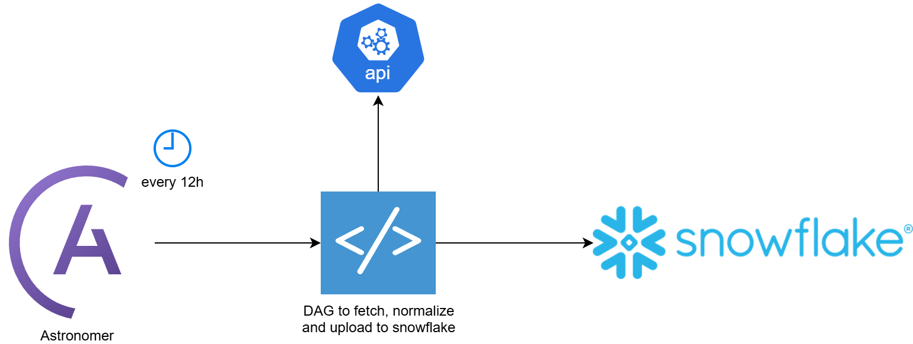
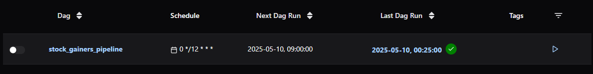
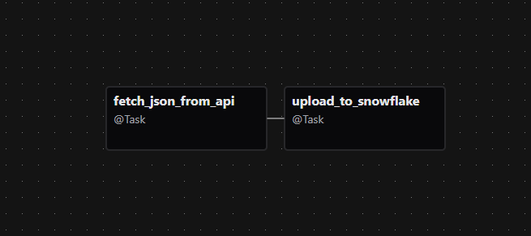
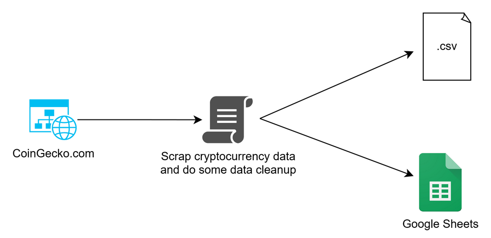
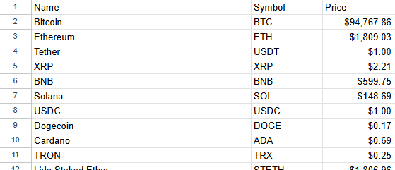
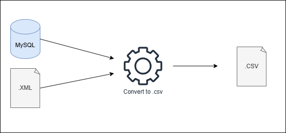

Data
Documenting projects I've been working on related to Data Engineering!
Automated Stock Market Data Pipeline with Astronomer, Airflow, Python and Snowflake



Designed and deployed a fully automated data pipeline using Apache Airflow managed by Astronomer to ingest and store stock market data. The pipeline retrieves structured data from a public REST API, processes it using Pandas, and stores the results in Snowflake for downstream analytics and reporting.
Used the @dag and @task decorators from Airflow's functional API to define a DAG scheduled to run every 12h (0 */12 * * *), ensuring up-to-date data ingestion.
Fetched real-time data on top stock gainers by sending GET requests to a configurable REST endpoint. The response is normalized and transformed into a pandas.DataFrame.
Utilized the snowflake-connector python library to connect to a Snowflake data warehouse.
Crypto Data ETL Scraper


This project is a Python-based web scraper that collects real-time data of the top 100 cryptocurrencies from CoinGecko and stores it in both a local CSV file and Google Sheets. Using Selenium for web scraping, the script extracts details like coin names, symbols, and prices, handling dynamic web content and cookie popups. The data is processed with pandas and exported via the gspread API for easy access and sharing. Features include headless browser operation, error logging, and a clean context manager for driver setup.
ETL using Node.js

In this ETL process, I used Node.js along with the xml-flow and fast-csv libraries to stream and transform XML data into a CSV file using a predefined delimiter. By processing each
This code uses mysql2 and fast-csv libraries to connect to a MySQL database, retrieves all rows from the items table, and streams them to a CSV file. It's asynchronous, memory-efficient, and handles both database and file I/O without blocking the Node.js event loop.
Serverless Event Driven Data Processing

This solution is for situations where files are uploaded on an ad hoc basis and require transformation before being loaded into a data target. In this case, files are uploaded in JSON format and converted to Parquet. Thanks to the SNS->SQS pipeline, the system is highly scalable, even with AWS Lambda limitations, and it's also extendable if there's a need to use the same event from the file upload in the data source for other purposes.